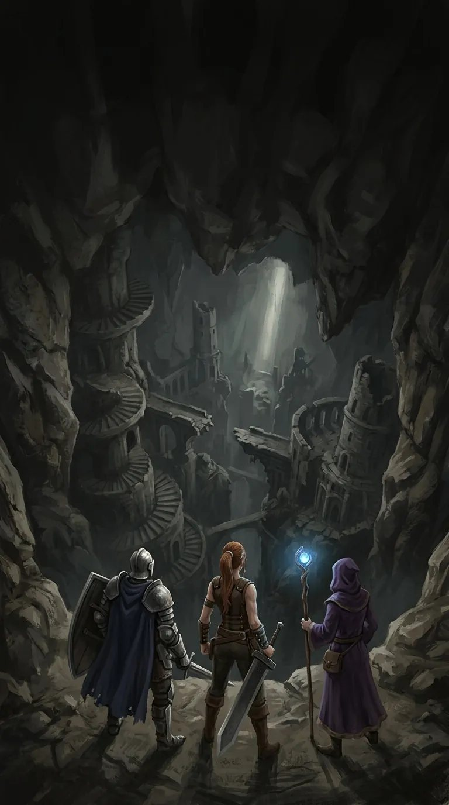
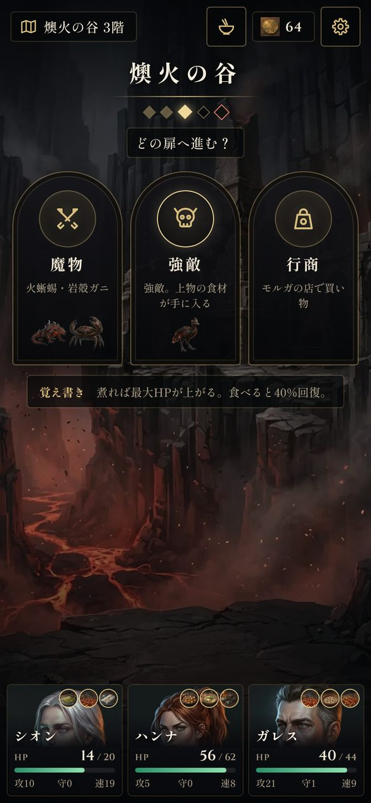
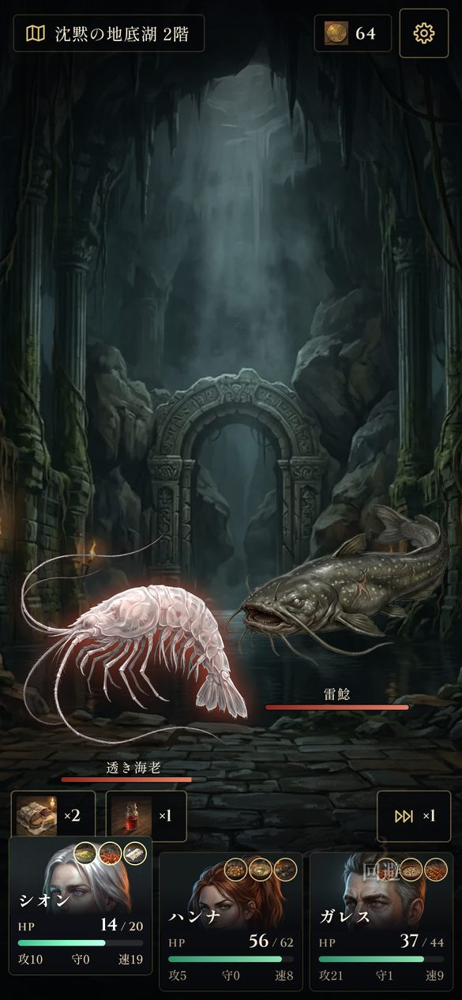
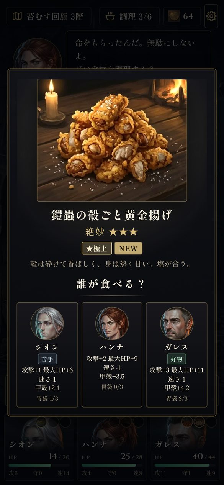
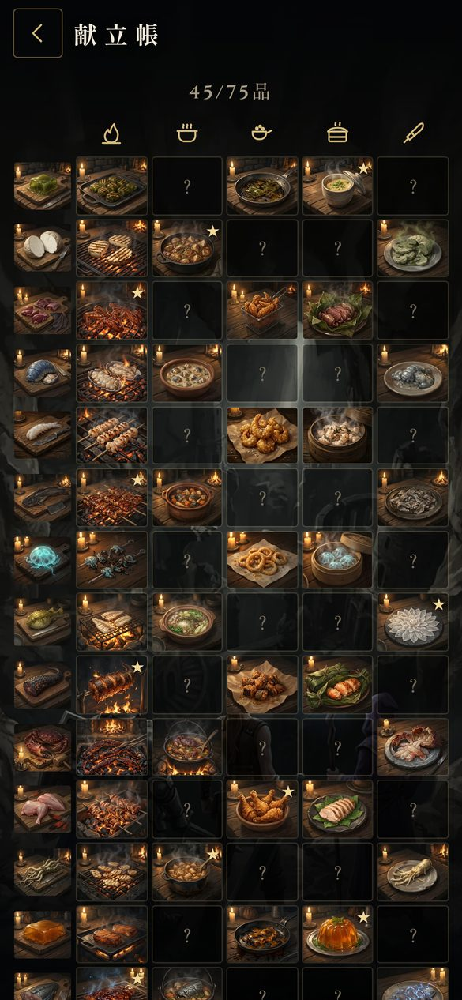

ものがたり
三年前の冬、谷の底が裂けて〈灰の大穴〉が口を開けた。以来、高原の村ヴェルナの畑は灰色に枯れ、井戸の水さえ苦くなった。
大穴へ降りた者は、誰ひとり戻らない。名乗り出たのは三人――盾を失った騎士ガレス、宿屋の料理番ハンナ、学院を追われた魔導士シオン。
携えた糧は三日分。大穴の魔物はどれも飢えていた。そして、こちらも。

狩り、捌き、喰らい、生き延びよ。
App Store にて配信準備中（iPhone）三年前の冬、谷の底が裂けて〈灰の大穴〉が口を開けた。以来、高原の村ヴェルナの畑は灰色に枯れ、井戸の水さえ苦くなった。
大穴へ降りた者は、誰ひとり戻らない。名乗り出たのは三人――盾を失った騎士ガレス、宿屋の料理番ハンナ、学院を追われた魔導士シオン。
携えた糧は三日分。大穴の魔物はどれも飢えていた。そして、こちらも。




| 対応 | iPhone（縦画面）・iOS 15 以上・日本語 |
|---|---|
| 遊ぶ時間 | 1回 15〜20分ほど |
| 売り方 | 買い切り。広告なし・アプリ内課金なし・スタミナなし |
| 通信 | 遊んでいるあいだは通信しません。セーブは端末の中だけ |
| 個人情報 | 集めません（プライバシーポリシー） |
| 制作 | サン楽（『いただきますダンジョン』の作者） |